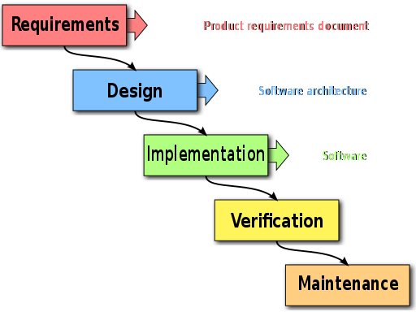

Scientific Software Best Practices¶
{kind=link}
This text is not meant to be a set of rules, but a set of guidelines that have been formed on the basis of hard-earned experience. We welcome contributions from anyone, anywhere on any of the topics discussed here. The home repository for this documentation is within the E-CAM Software Library.
It began as a starting point for guidelines for contributions to the Extended Software Development Workshops (ESDWs) of E-CAM but can be considered as a collection of best practice advice for scientific software development. The scope of these workshops was always expected to vary significantly depending on the research area, as well as over the project lifetime. For this reason the document itself is quite broad and (in many places) introductory in nature.
General Programming Guidelines¶
Firstly let us consider some guidelines that are applicable regardless of the type of software project you are working on.
Programming for an HPC Environment¶
Due to the nature of the HPC environment (novel hardware, latest techniques, remote resources,...). There are many specific things that need to be considered that impact the software development process.